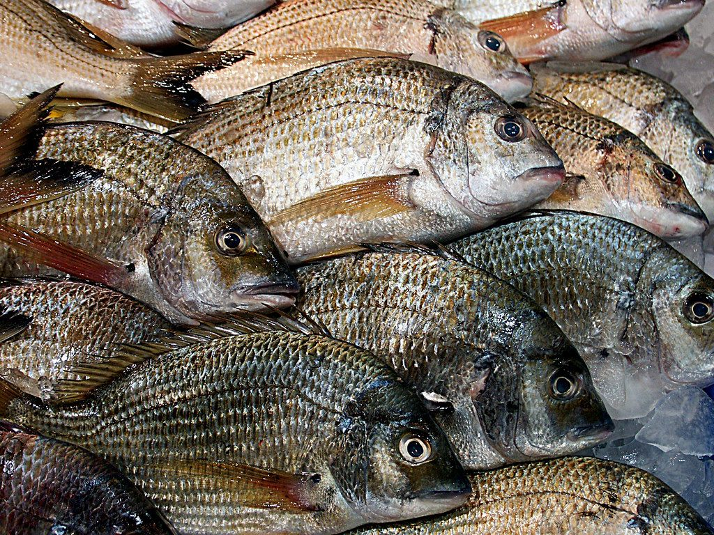
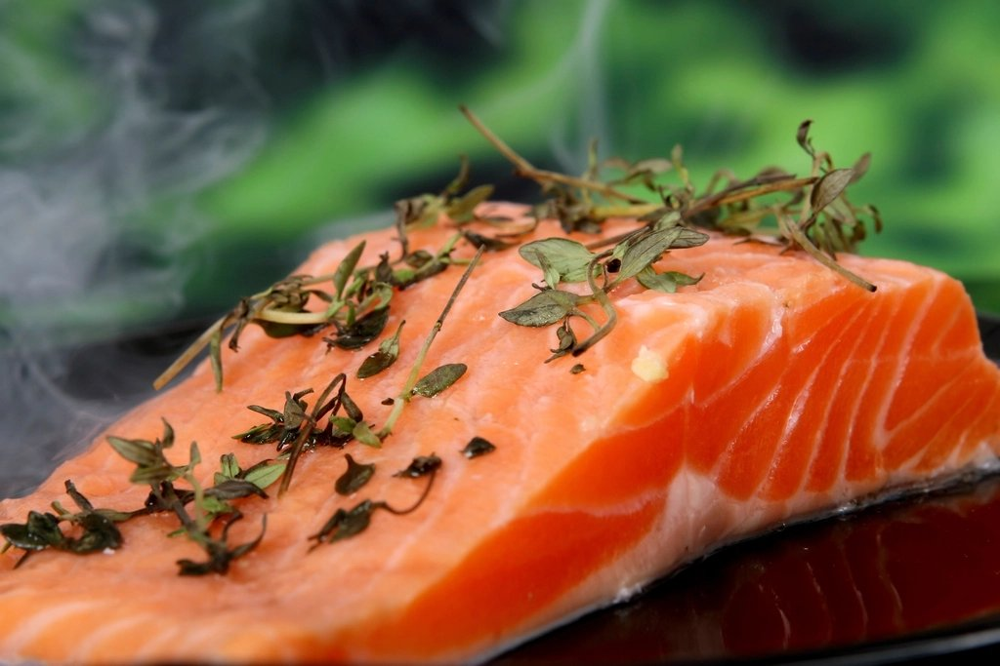
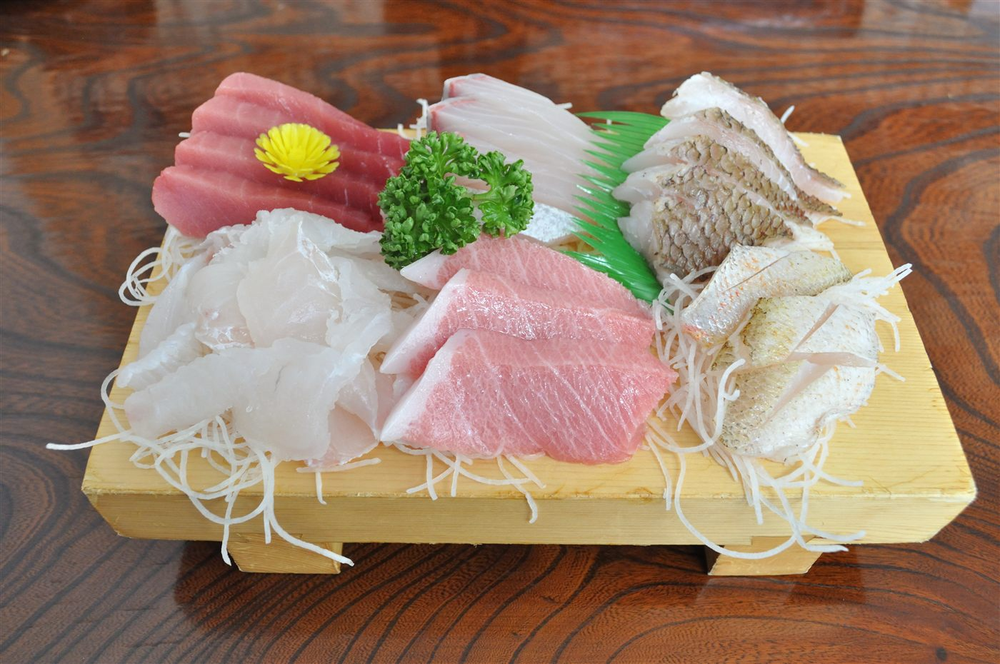
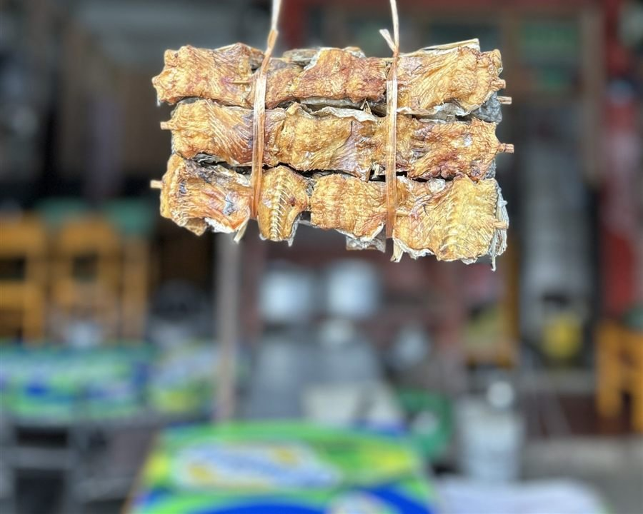
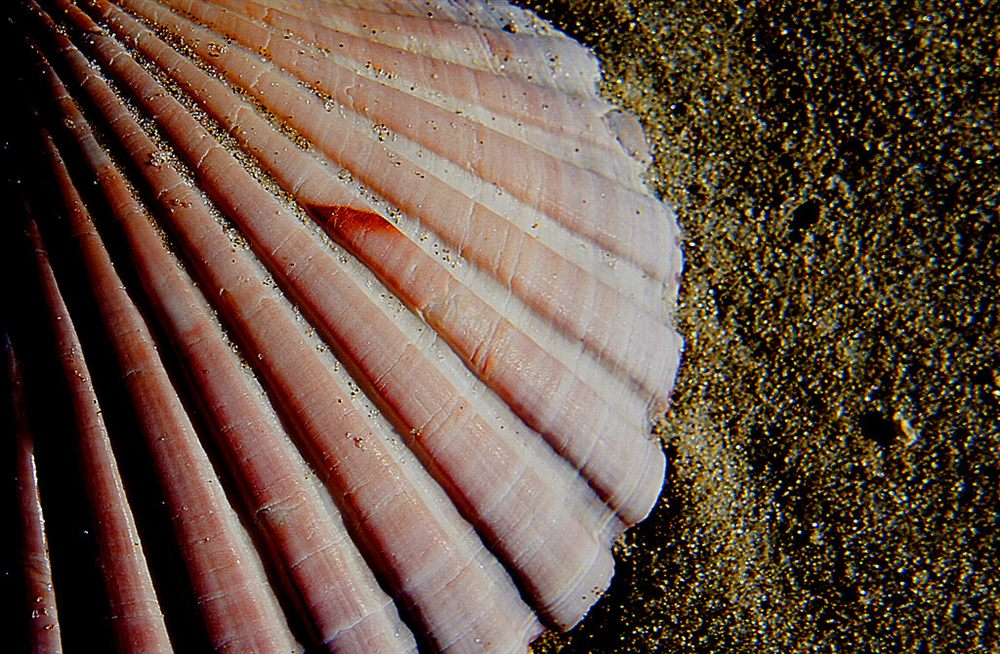
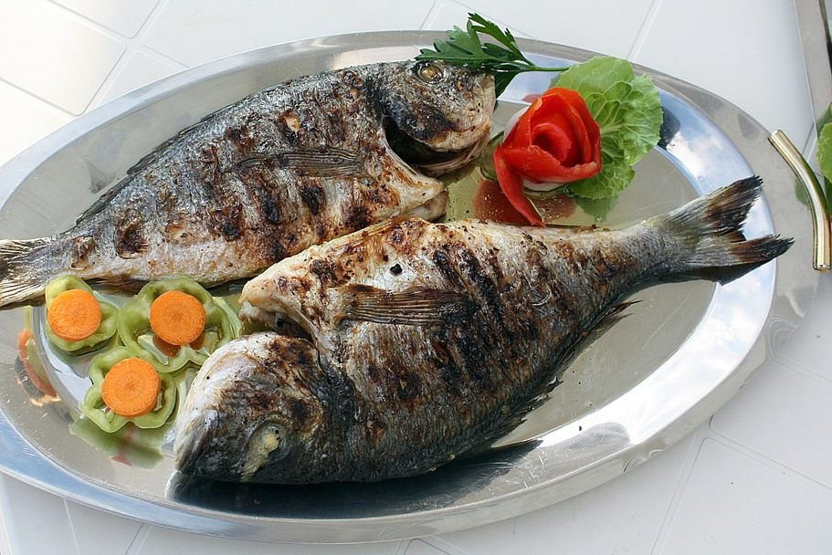

今日の魚裕、何が並ぶ?
品揃えは、その日の仕入れ状況によって毎日少しずつ変わります。以下はよく並ぶ商品の一例です。お越しの際のお楽しみに、ぜひご覧ください。

丸魚・貝類
サバ / アジ / カマス / イカ / アサリ / ハマグリ 等
通年扱う定番の魚介に加え、季節ならではの魚も並びます。丸魚の内臓処理・三枚おろしも対応しますので、調理に不安がある方もお気軽にご相談ください。

切り身
シャケ 等
シャケをはじめとした切り身は、年間を通じて美味しさに定評があります。「他とは違う」とのお声もいただく人気の一品です。

お刺身
盛り合わせ / マグロ / アジ / 甘エビ / 真鯛 / カンパチ / 真ダコ 等
盛り合わせのほか、マグロ、アジ、甘エビ、真鯛、カンパチ、真ダコなど、日によって多彩な顔ぶれが並びます。毎朝豊洲市場で仕入れる鮮度の高さが自慢です。

干物
イワシ / ホッケ / サバ 等
イワシ、ホッケ、サバなどの干物を扱っています。「新物」が入荷した際は特におすすめで、「スーパーの干物とは全然違う」というお客様の声もいただいています。

珍しい魚介
メヒカリ / トビウオ / エボダイ / タチウオ / ワタリガニ / 殻付きホタテ 等
メヒカリ、トビウオ、エボダイ、タチウオといった、ふだん見かけない魚に加え、ワタリガニや殻付きホタテなど、他ではなかなか出会えない魚介も並びます。

お惣菜・加工品
煮付け / 焼き魚 / フライ 等
煮付け、焼き魚、フライなど。かつて料理屋を営んでいた店主の技が生きるジャンルです。お刺身と合わせて、食卓のもう一品にどうぞ。
価格について
鮮魚は仕入れ状況により価格が変動する「時価」の商品もございます。詳しい価格は店頭にてご確認ください。
お客様の口コミでは、刺身の盛り合わせや予約制の刺し盛りが話題になることもあるようです(金額は仕入れ状況により変わりますので、あくまで口コミで紹介された一例としてご参考ください)。
ご来店のポイント
品揃えは午後、時間が経つにつれて充実していく傾向があるようです。「午後の時間帯がおすすめ」というお客様の声もありますので、刺身やお惣菜をお探しの方はぜひ参考にしてみてください。
ご予約について
刺し盛りやお祝い用の鯛など、事前のご相談・ご予約も承っております。内容によりご対応が異なりますので、まずはお電話にてご相談ください。